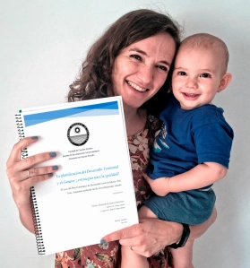

Inicio

Soy Doctora en Ciencias Sociales, Licenciada en Trabajo Social y Máster en Cooperación al Desarrollo, especializada en género y territorio. Con más de 10 años de experiencia en docencia universitaria e investigación y más de 8 en equipos provinciales, nacionales e internacionales de planificación y evaluación de programas y proyectos.

Entre mis habilidades destacan liderazgo, trabajo en equipo, perseverancia, ética profesional, atención al detalle, trabajo intercultural. Tengo mucha facilidad para la informática y desarrollo web (WordPress, HTML, CSS) y me interesa mucho el campo de Data Analysis (en formación)